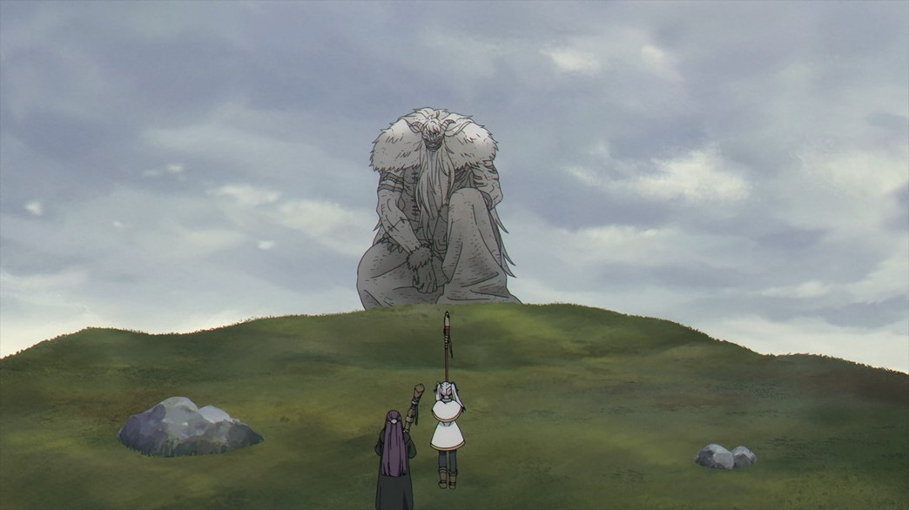
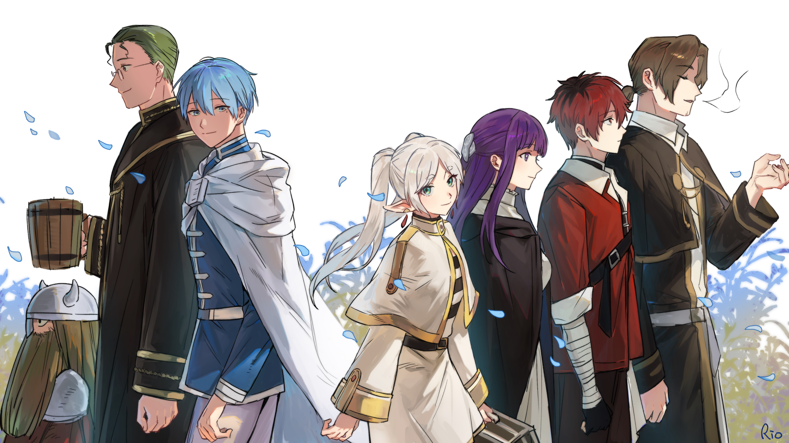

Logro 1: Derrota del Rey Demonio

Frieren fue una pieza clave en la victoria contra el Rey Demonio, utilizando su poder mágico con una precisión y potencia que asombró incluso a sus compañeros. Su participación fue vital para traer la paz al mundo después de siglos de oscuridad.
Logro 2: Superación personal y nuevos lazos

Tras la muerte de Himmel, Frieren inició un viaje de introspección, creando nuevos lazos y aprendiendo a valorar el tiempo compartido con los demás. Esta transformación interna es uno de sus logros más profundos.
Tabla de logros obtenidos
| # | Logro | Descripción | Importancia |
|---|---|---|---|
| 1 | Derrota del Rey Demonio | Participación en la batalla final junto al grupo del héroe Himmel | Alta |
| 2 | Aprendizaje emocional | Comprensión del valor de los vínculos humanos | Alta |
| 3 | Formación de nuevos magos | Entrena a nuevos aprendices durante su viaje | Media |
| 4 | Exploración mágica | Descubrimiento de hechizos antiguos y técnicas olvidadas | Media |